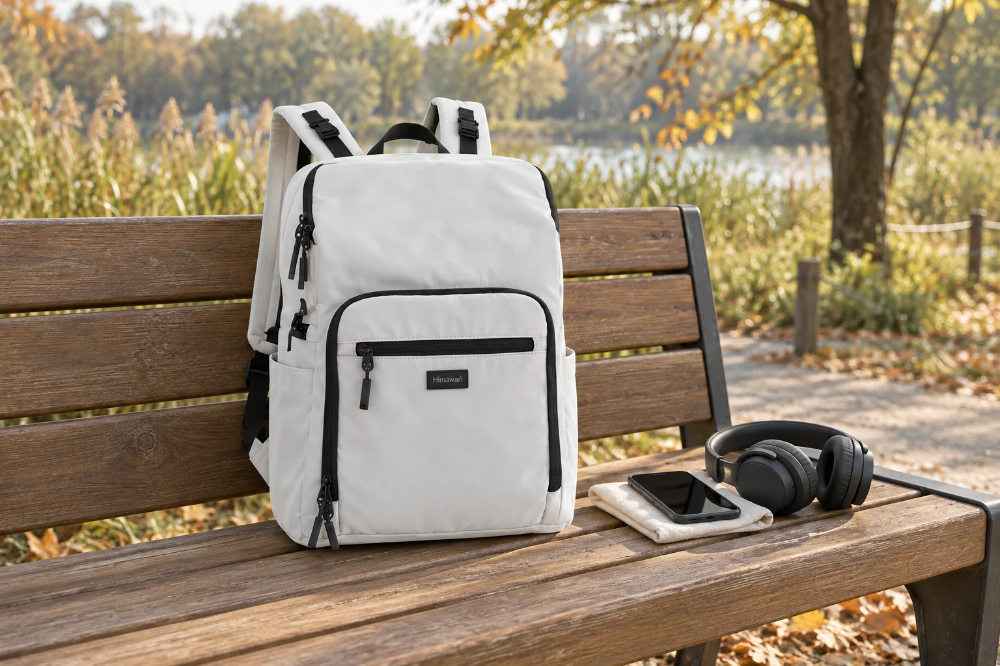
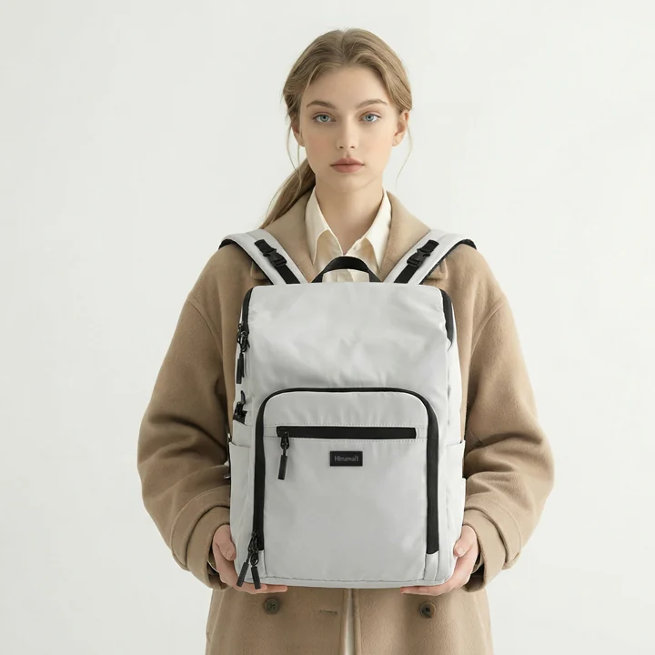

이어폰 선이 백팩 지퍼 사이에 남지 않도록

백팩에서 휴대전화를 꺼내 쓴 뒤 다시 넣으면 연결된 이어폰 선은 가방 밖에 남을 수 있습니다. 급하게 지퍼를 닫다 보면 선이 입구의 어느 쪽을 지나는지 놓치게 됩니다. 물건을 넣었다는 확인과 선을 정리했다는 확인이 따로 필요한 장면입니다. 유선 소품을 자주 쓰는 날에는 케이블을 묶는 방법뿐 아니라 백팩 입구에서 선이 사라질 자리를 함께 정해봅니다.
가방 안에 기기를 둔 채 밖으로 선을 이어 쓸 계획인지, 사용할 때 기기 전체를 꺼낼 계획인지부터 구별할 수 있습니다. 어느 구성이 가능한지는 기기와 가방의 실제 사용 안내를 따릅니다. 확인되지 않은 지퍼 틈을 케이블 통로처럼 쓰는 대신 안내된 연결 방식을 봅니다. 사용할 때의 형태가 정해져야 사용을 마친 뒤 무엇을 가방 안으로 되돌려야 하는지도 분명해집니다.

지퍼가 닫히는 선을 비워두기
Himawari No.1223 화이트의 실제 제품 사진에는 위쪽 손잡이와 몸체를 따라 이어지는 검정 여밈 선, 앞면에 구분된 부분이 보입니다. 외부 크기는 가로 29 × 세로 40 × 폭 14cm로 안내됩니다. 사진에 보이는 여밈의 위치는 읽을 수 있지만 별도 케이블 통로나 연결 기능의 존재는 이 자료에서 확인되지 않습니다. 제품이 안내한 입구를 사용하고 선은 자신의 기기 구성에 맞춰 정리합니다.
지퍼 가까이에 케이블 묶음을 놓으면 작은 끝 하나가 밖으로 나올 수 있습니다. 케이블 전체가 들어간 것처럼 보여도 플러그나 분리된 짧은 선이 입구에 남았는지 봅니다. 지퍼 손잡이를 당기는 손보다 앞서 그 선이 어느 물건에서 이어지는지 확인하면 정리할 부분이 보입니다. 줄이 걸리는 느낌을 받았을 때에는 더 당겨 닫지 않고 여밈을 볼 수 있는 상태로 되돌립니다.
가방 밖에 남은 선을 잡아 안쪽 물건까지 끌어당기면 무엇이 함께 움직이는지 알기 어렵습니다. 기기 본체와 선을 각각 확인한 뒤 적절한 방식으로 정리합니다. 연결부를 분리해 보관하는 구성이라면 그 절차를 따르고, 연결 상태를 유지하는 구성이라면 안내된 이동 모양으로 둡니다. 백팩의 지퍼를 닫는 동작이 기기의 연결 상태를 바꾸는 힘이 되지 않도록 구별하는 것입니다.
길게 풀린 선과 짧은 부속의 자리
길게 쓰던 선을 정리하면 부피가 있는 한 묶음이 됩니다. 가방 안에서는 그 묶음이 놓일 자리와 플러그가 향할 면을 봅니다. 노트나 기기의 넓은 면 사이에 단단한 끝을 그대로 끼우면 물건끼리 맞닿는 위치가 바뀔 수 있습니다. 파우치로 모으는 방법을 고르더라도 닫힌 묶음의 모양을 기준으로 놓습니다. 가방의 입구 바로 아래에 쌓여 여밈을 가리지 않는지도 함께 살펴봅니다.
짧은 어댑터나 분리된 부속은 긴 선보다 눈에 덜 들어올 수 있습니다. 같은 기기와 쓰는 소품이라면 케이블을 꺼낼 때 함께 찾을 위치를 정할 수 있습니다. 현재 사용하는 작은 케이스나 수납칸이 있다면 그 크기와 여밈을 확인합니다. 큰 파우치 하나를 새로 더하기 전에 실제로 분리되는 부품이 무엇인지 알고 있으면 필요한 공간을 줄여 고를 수 있습니다.
케이블을 묶는 밴드가 있다면 사용 뒤에도 같은 묶음 안에서 닫아둡니다. 열린 갈고리 면이 천에 걸리는 문제는 밴드의 보관 방식으로 따로 살펴볼 수 있습니다. 가방 입구 가까이에서는 풀린 선과 작은 부속이 남는지를 봅니다. 소품을 하나의 묶음으로 만들었다면 그 전체가 여밈 안쪽에 놓이는지, 다른 짐을 꺼내며 다시 풀려 나오지는 않는지가 이어지는 질문입니다.
기기를 되담는 순간의 순서
잠깐 멈춰 기기를 사용한 뒤 바로 걸으려 하면 손에 기기와 선, 가방 손잡이가 함께 남습니다. 정리할 수 있는 자리에서 기기의 사용 상태를 마친 뒤 선을 확인하고, 그 묶음을 가방 안으로 옮기면 동작을 나눌 수 있습니다. 필요한 소품을 꺼냈다가 되담을 때 어떤 물건이 마지막까지 손에 남는지 자신의 흐름에서 봅니다. 한 손으로 전부 처리하는 방식보다 정돈할 면이 있는 곳을 골라도 됩니다.
가방을 세운 상태에서만 잘 되던 정리가 벤치에 눕혀 둔 상태에서는 다르게 보일 수 있습니다. 입구가 옆을 향하면 선의 끝이 밖으로 떨어질 수도 있습니다. 같은 위치에 담았다는 기억보다 지금 보이는 여밈 주변을 확인합니다. 지퍼를 닫기 전에 가방의 가장자리를 한 번 따라 보면 풀린 선이나 작은 부속이 경계에 놓였는지 알 수 있습니다. 사용하는 상태에서 쉽게 반복할 수 있는 정도로 순서를 정합니다.
기기를 자주 꺼내는 날에는 케이블 묶음이 그 길을 막는지도 살펴봅니다. 휴대전화를 꺼낼 때마다 옆의 선이 함께 따라 나오면 자리를 나눌 이유가 있습니다. 반대로 기기와 케이블을 항상 함께 쓰는 사람은 통째로 꺼낼 한 묶음이 편할 수 있습니다. 가방에 돌아온 뒤 둘의 위치가 유지되는지 보면 어느 방식이 자신의 사용에 맞는지 고를 수 있습니다. 정리의 단위는 실제로 꺼내는 구성과 연결됩니다.
귀가 후에는 케이블을 꺼내 현재 상태를 살펴보고 제품의 보관 안내에 맞춰 둡니다. 지퍼에 닿았던 자리가 있거나 겉모양이 달라졌다면 다음 사용 전에 확인할 수 있습니다. 백팩 안쪽에서도 작은 부속이 입구 주변에 남아 있는지 봅니다. 다음 외출에는 선을 더 촘촘하게 묶는 일보다 가방의 닫히는 경계에서 케이블이 어디에 놓이는지 먼저 읽으면 됩니다. 사용을 끝낸 묶음이 그 안쪽에 정리된 뒤 지퍼를 닫습니다.